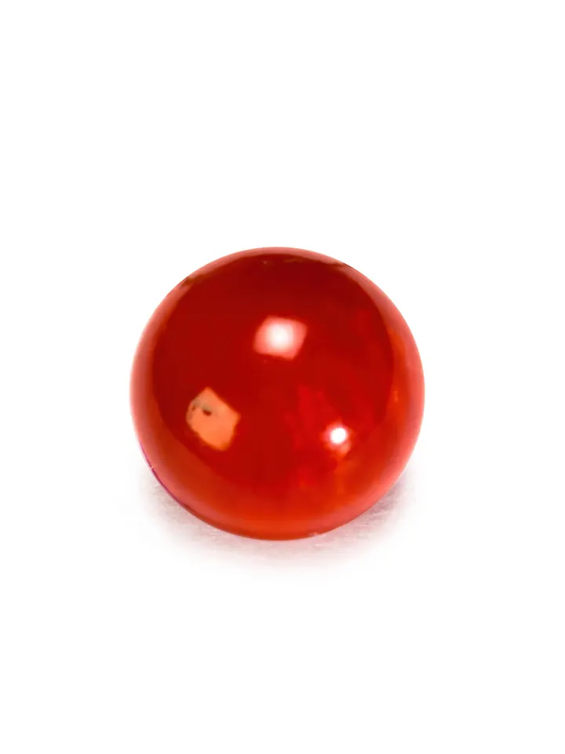

天然珍珠與養殖珍珠：身世之謎
天然珍珠與養殖珍珠像雙胞胎——成分一樣、身世不同，X光一眼看穿誰「動過手術」。

核心定義
天然珍珠（natural pearl）是貝類在自然環境中偶然包裹刺激物形成——全程無人類介入；養殖珍珠（cultured pearl）是人類植入珠核/珠片引導形成。兩者成分完全相同（碳酸鈣＋貝殼素），差別在「誰放了那顆刺激物」。
天然珍珠的稀有度：現代海洋中天然珍珠幾近絕跡（過度捕撈與污染）——市面 99% 以上是養殖珍珠。一顆品質好的天然珍珠，價格可達同級養殖珠的數十倍甚至百倍——它是珍珠世界的「野生奇蹟」。
特徵與分類
| 特徵 | 天然珍珠 | 養殖珍珠 |
|---|---|---|
| 珠核 | 無（全珍珠質） | 有珠核/珠片 |
| 形成 | 自然刺激 | 人為植入 |
| 稀有度 | 極罕見 | 市場主流 |
| 價格 | 天價 | 分級定價 |
分辨的關鍵：天然珍珠全由珍珠質構成，養殖珍珠有珠核（珍珠質只包外層）——X 光攝影能看穿內部結構：養殖珠有明顯珠核輪廓，天然珠是均勻的同心珍珠質。
科學原理
X 光分辨的原理：天然珍珠的珍珠質層連續均勻（同心圓），養殖珍珠內部有珠核（貝殼珠核或珠片）與珍珠質外層的明顯分界——X 光片上一目了然。顯微鏡下，天然珠的「生長線」與養殖珠的「核層分界」也不同。
天然珍珠為什麼稀有：貝類需在自然環境中剛好遇到刺激物、且不被漁民發現——現代過度捕撈讓天然珍珠產量歸零。稀有度是價格的物理基礎。
鑑定與鑑別方法
- X 光攝影：看珠核輪廓
- 顯微鏡：生長線 vs 核層分界
- 紫外燈與螢光：天然珠反應較均一
- 重量與手感：有核較重
- 權威實驗室（GIA/SSEF）定論
市場行情與保養建議
行情：天然珍珠在拍賣市場屢創紀錄（一串頂級天然海水珠可達百萬美元級）；養殖珍珠按光澤、圓度、大小分級定價。近年「天然珍珠熱」回潮，收藏家追逐「最後的野生珍珠」。
提醒：市場常把養殖珍珠含糊稱「天然」（養殖也是天然貝類產物）——證書會精確標明 natural / cultured。追求天然者，務必看證書的「天然」二字。
常見誤區
養殖珍珠與天然珍珠成分完全相同——它是「人類引導的天然產物」，不是塑膠仿品。養殖與天然，是同一個貝類的兩種人生。
肉眼幾乎無法分辨——只有 X 光與顯微鏡能看穿內部結構。肉眼能分辨的，是珍珠與塑膠。
冷知識
日本御木本幸吉（Mikimoto）成功培育第一顆半圓養殖珠——他後來被譽為「珍珠王」，改變了珍珠世界的供應版圖。
一粒沙進入貝殼、貝類恰好沒把它排出——天然珍珠的形成，是機率極低的自然巧合。
反直覺觀點
天然珍珠的「天價」買的不是成分，是「沒有手術刀的自然奇蹟」——稀缺性與敘事，是價格的放大器。
人類植入標準珠核、控制培育環境——養殖珍珠的品質反而常優於天然。天然的美是運氣，養殖的美是工程。